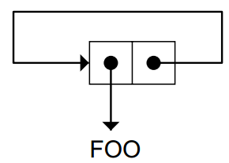

Assignment
UPDATINGA GLOBAL VARIABLE
(setf *total-glasses* 0)
>(+ *total-glasses* 3)
incf decf macros
> (setf a 2)
2
> (incf a 10)
12
> (decf a)
11
The PUSH and POP Macros
push item var_stack
(pop var_stack)
when unless
== if (java)
The only advantages of WHEN and UNLESSover COND are stylistic（文体）
GENERALIZED VARIABLES
(setf x ’(jack benny was 39 for many years))
(setf (sixth x) ’several)
> x
(JACK BENNY WAS 39 FOR SEVERAL YEARS)
Lisp Toolkit: BREAK and ERROR
DIY list
use SETF on generalized variables to manipulate pointers directly
> (setf (cdr circ) circ)
(FOO FOO FOO FOO ...)

DESTRUCTIVE OPERATIONS ON LISTS
have names thatbegin with N
NCONC
a destructive version of append If the first input to NCONC is NIL, it just returns its second input
(setf x ’(a b c)) (A B C) (setf y ’(d e f)) (D E F) (append x y) Doesn’t change X or Y, but (A B C D E F) result shares structure with Y. x X is unchanged. (A B C) (nconc x y) NCONC alters the list (A B C). (A B C D E F) x X’s value has changed. (A B C D E F) y Y’s has not. (D E F)
NSUBST
a destructive version of SUBST
Other Destructive Functions
NREVERSE, NUNION, NINTERSECTION, andNSET-DIFFERENCE